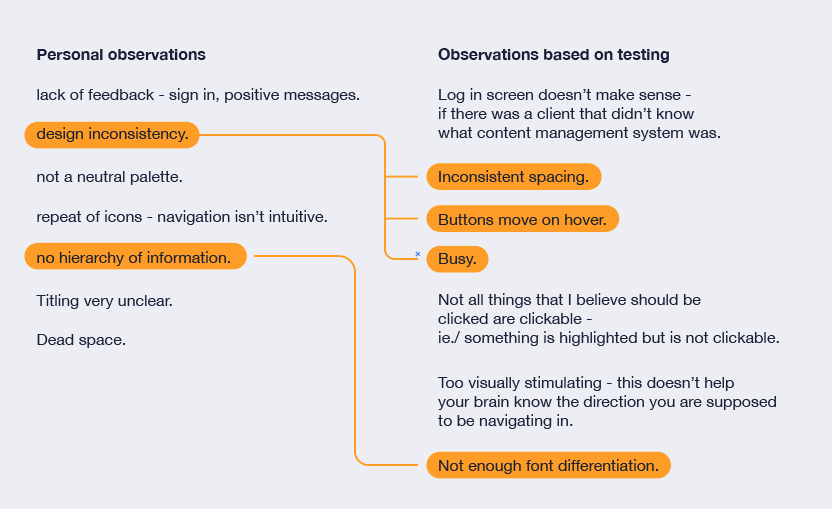
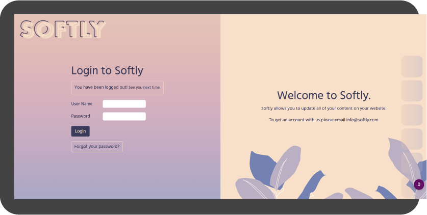
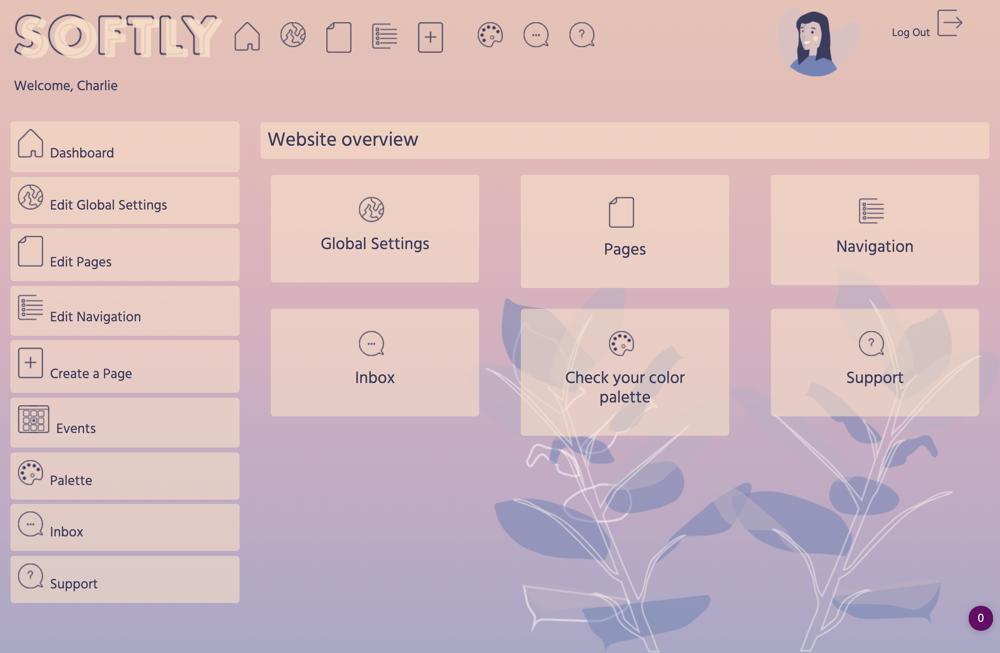
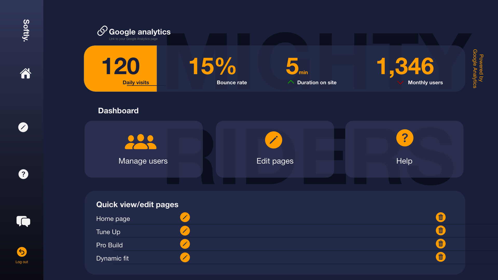
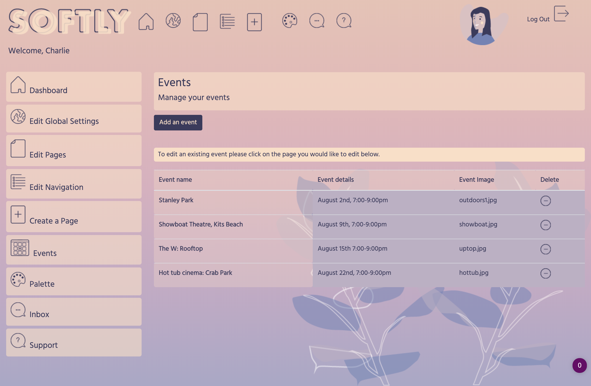
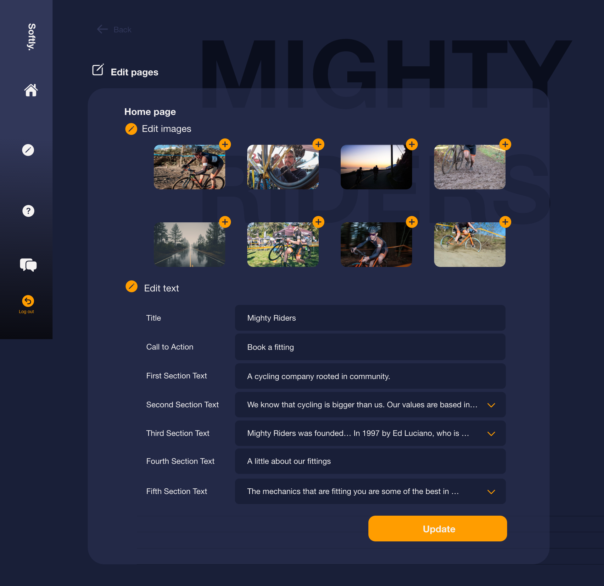
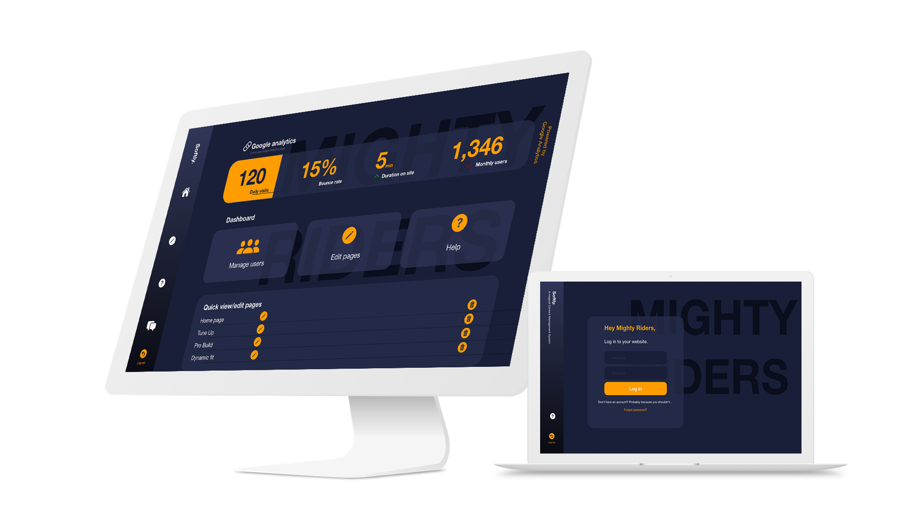

Softly.
Case Study
Charlie Stableford
UX/ UI, IA, IxD
Softly was fully coded PHP based content management system that in its first version was intended to be accessible, easy to navigate and beautiful. Softly was used for five projects within a four month period. The first three clients that were used Softly were mock clients and were used as a part of a grading structure.
The last two clients were real world clients.
I redesigned Softly to make it fit the clients and be geared towards their needs as well as do testing to ensure that their experience was as intuitive as possible.
In the end the functionality needed for their CMS leaned towards hosting their website on Wordpress as opposed to my custom CMS so the final version is a tested design as opposed to a coded CMS.
The last two clients were real world clients.
I redesigned Softly to make it fit the clients and be geared towards their needs as well as do testing to ensure that their experience was as intuitive as possible.
In the end the functionality needed for their CMS leaned towards hosting their website on Wordpress as opposed to my custom CMS so the final version is a tested design as opposed to a coded CMS.
Role
UX / UI, IA, IxD
Context
Personal project
Duration
4 months/ 2019-2020
Updating your website should be simple,
clear and consistent.
Original design
Final design
Initial Analysis
This project originally had a very tight timeline. The focus was on its functionality as opposed to UX / UI focused. To begin the process of redesign I made a list of all of the ways that it could be improved upon.
This is how I created my hypothesis for what aspects of Softly should be altered.

User Journey Flow
After identifying pain points I went back to cards - to be clear about what I wanted my CMS design to look like, what I wanted the user journey to look like and that the functionality would be met within the criteria I had set for myself. In the first iteration of Softly user journey flows were not brought to conception so the outcome of this practice was very important when thinking about the redesign.
Key CMS Pages


In the redsign of Softly the functionality was streamlined to restrict what the user was capable of. This was done to keep consistency across the front end of the site. The pages that were focused on were -
Log in screen


The feedback that was recieved from the log in screen was that not all users would know what a content a content management system is used for.
The redesign aimed to have a stronger heirarchy of typeography and a clear CTA.
Dashboard


A feature of the dashboard that the client wanted to highlight was Google Analytics so I wanted this to be the most
prominent aspect of the home page.This would also provide constant positive feedback associated with the website.
Edit pages


The functionality of the page management portion of Softly became streamlined to what the client wanted. The hierarchy the page altered to have a clear flow of the edit page.This was to improve the feedback state between user and CMS.
Help / FAQ

In this design there is a help / FAQ section as a manual to help the user along with frequent questions. This is something I would hope to update as time went on and I continued to user test to improve the product. These questions are based on frequent questions that came up during testing.
Outcome
The goal of redesigning this CMS was for it to be delivered to a client as a fully functional CMS that was powered by Node. As I began to redesign the functionality that was required for this CMS became something that needed to be more dynamic then what I was able to create with my skillset. So the end project was a full redesign that was user tested but not a full product that woule be able to meet a deliverable.
The testing mainly was with folks who had not used a personalized CMS before and were not tech savvy. I wanted anyone to be able to use it and have it be very self explainatory.
In the end I was happy with the designed product and happy with the conclusion to not move forward with Node.
The testing mainly was with folks who had not used a personalized CMS before and were not tech savvy. I wanted anyone to be able to use it and have it be very self explainatory.
In the end I was happy with the designed product and happy with the conclusion to not move forward with Node.
If you have made it this far thank you for reading. I appreciate your time!